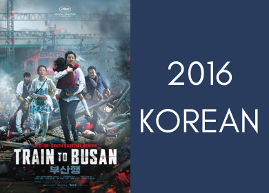
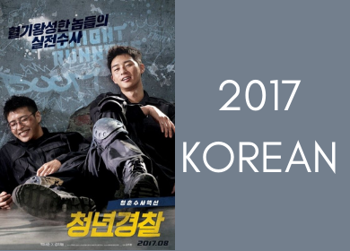

|
| TRAIN TO BUSAN |
|---|
|  Seok-Woo (Gong Yoo) is a fund manager in Seoul. He is separated from his wife and lives with his daughter Soo-An (Kim Soo-Ahn). Seok-Woo doesn't spend much time with his daughter or show affection to her. On the night before Soo-An's birthday, Soo-An insists on seeing her mother for her birthday. Seok-Woo has no other choice, but to take her to Busan. Early the next morning, they board the KTX train for Busan at Seoul Station. Before the KTX train leaves Seoul Station, a zombie like girl jumps onto the train. The girl is infected with a horrific virus that is spreading like wildfire. Seok-Woo, Soo-An and the other passengers on the KTX train must now fight for their lives. |
| BAD GENIUS |
|---|
Lynn, a genius high school student who makes money by cheating examinations, receives a new task that leads her to set foot in Sydney, Australia. In order to complete the millions-baht task, Lynn and her classmates have to finish the international STIC (SAT) exam and deliver the answers back to her friends in Thailand before the exam takes place once again in her home country. |
| MIDNIGHT RUNNERS |
|---|
|  Ki-Joon (Park Seo-Joon) and Hee-Yeol (Kang Ha-Neul) are new students at the Korean National Police University. They are not the best students, but they are sincere when it matters. They decide to go out one evening. Towards the end of their night, they witness a young woman being kidnapped. Ki-Joon and Hee-Yeol try to get the police involved, but they meet apathy and bureaucracy. The two police cadets decide to save the young woman's life before it's too late. |
| FRIEND ZONE |
|---|
For 10 years, Palm has been stuck in the friend zone with his best friend, Gink. He has had feelings for her since high school and even tried confessing to her then but she rejected him, saying that being friends was enough. Over the years, they grow closer to each other. Whenever Palm breaks up with his countless girlfriends, Gink will tell him off. As for Gink, whenever she fights with her boyfriend, it doesn't matter which country she is in at the time, Palm will use his perks as a flight attendant to fly to her the moment she gives him a call. |
| INNOCENT WITNESS |
|---|
A housemaid, Mi-ran (Yum Hye-ran), stands accused of murdering her elderly employer, although she claims merely to have failed in her efforts to prevent his suicide. Their scuffle is witnessed from across the street by Ji-woo, whose autism impedes her from interacting fully with the outside world. |
| THE DIVINE FURY |
|---|
When he was a child, Yong-Hoo's (Park Seo-Joon) father died in an accident. Yong-Hoo has distrusted and resented people since then. Now, Yong-Hoo is champion in martial arts. He meets Priest An (Ahn Sung-Ki). Priest An is also an exorcist. They get involved in a case and must fight a powerful evil. |